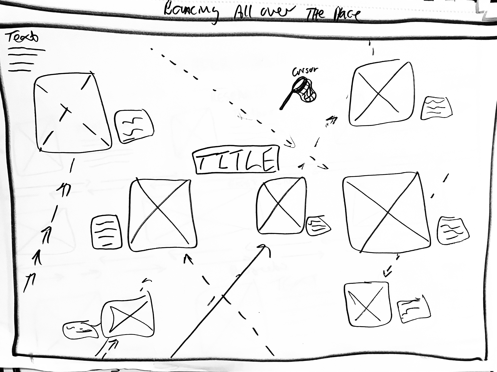
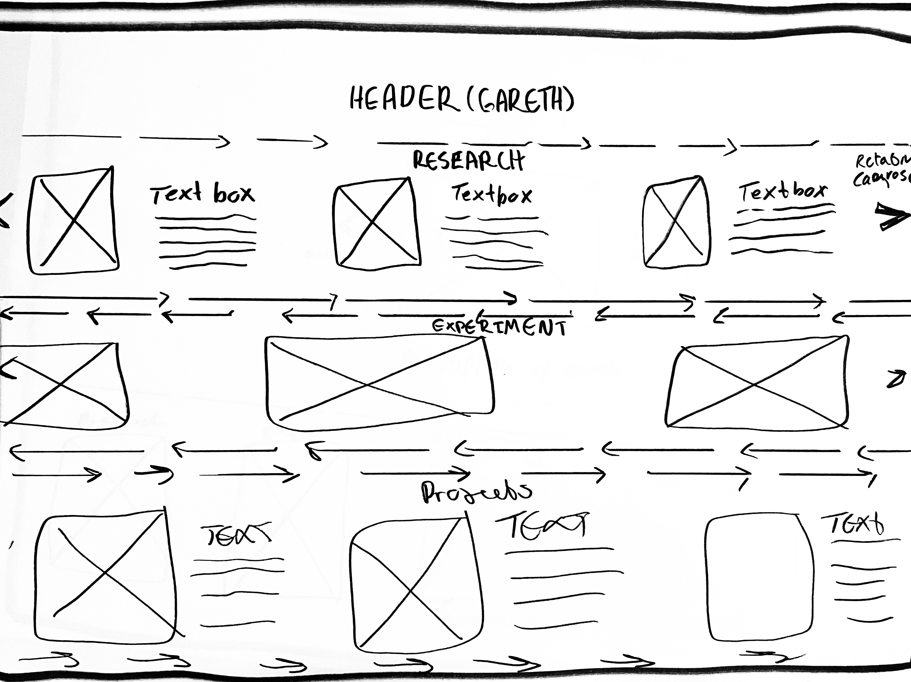
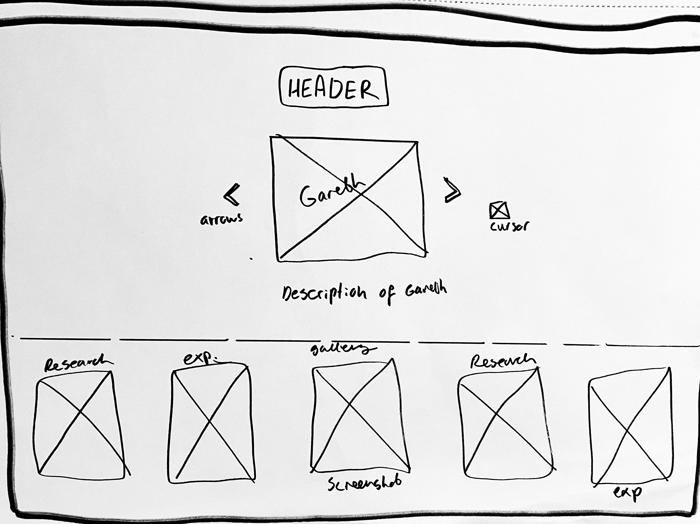
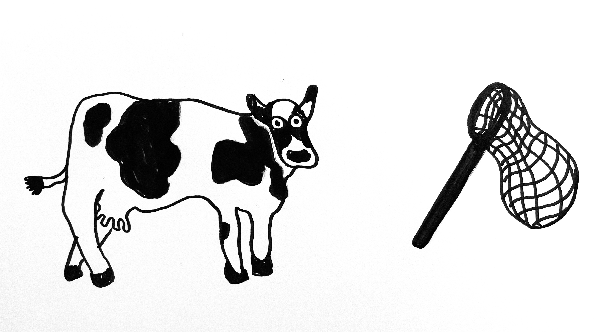
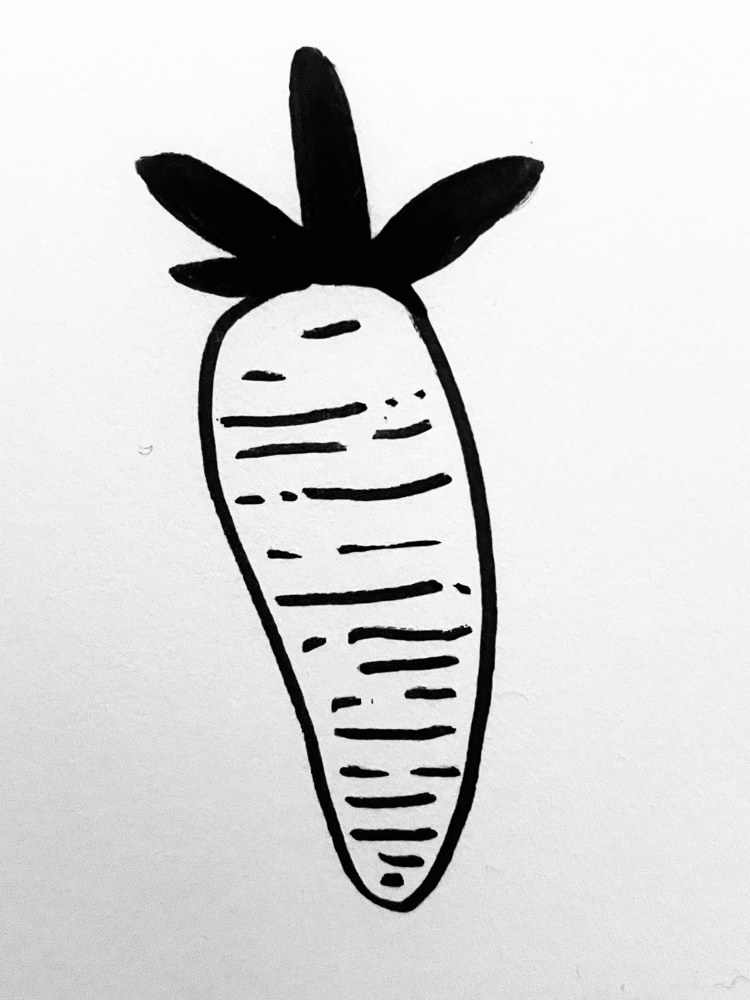
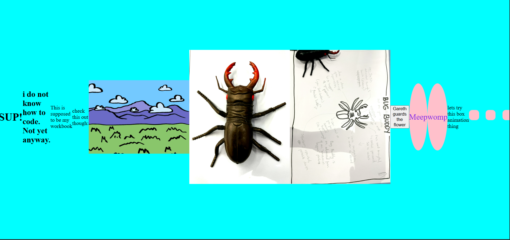

Early concepts for the Workbook Farm


Cursor ideas for the Workbook


Screenshots of code snippets, including code for the initial iteration of the Workbook, embedded audio players, and flying objects



These assets were drawn by hand in my sketchbook and then brought into Photoshop, where they were exported as pngs.
Assets used to create the site's farm interface


These are the initial trials of my workbook, demonstrating the trial and error process of coding (especially the screenshot on the left).
Early concept for the Workbook Farm